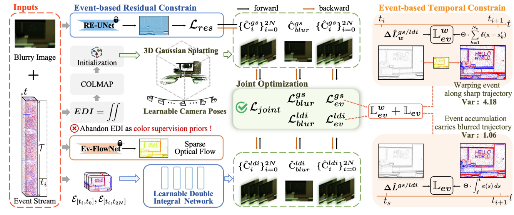

<!DOCTYPE html>
<html>
  <head>
    <meta charset="utf-8">
    <title>EvFlow-GS</title>
    <link rel="stylesheet" type="text/css" href="assets/scripts/bulma.min.css">
    <link rel="stylesheet" type="text/css" href="assets/scripts/theme.css">
    <link rel="stylesheet" type="text/css" href="https://cdn.bootcdn.net/ajax/libs/font-awesome/4.7.0/css/font-awesome.min.css">
  </head>
  <body>
    <section class="hero is-light" style="">
      <div class="hero-body" style="padding-top: 50px;">
        <div class="container" style="text-align: center;margin-bottom:5px;">

          <h1 class="title">
            EvFlow-GS: Event Enhanced Motion Deblurring with Optical Flow for 3D Gaussian Splatting
          </h1>

          <div class="author">
            <p  style="font-size: 22px">
              Feiyu An<sup>1</sup> &nbsp&nbsp&nbsp&nbsp&nbsp Yufei Deng<sup>1 </sup> &nbsp&nbsp&nbsp&nbsp&nbsp Zihui Zhang<sup>1</sup> &nbsp&nbsp&nbsp&nbsp&nbsp Rong Xiao<sup>1 </sup>
            </p>
          </div>
          
          <div class="aff">
            <p style="font-size: 20px"><sup>1</sup> College of Computer Science, Sichuan University, Chengdu, China
            <p> </p>
          </div>
          
          <div class="con">
            <h1 style="text-align: center;">Accepted by International Conference on Multimedia and Expo 2026 (ICME 2026)</h1>
          </div>

          <div class="columns">
            <div class="column"></div>
            <div class="column"></div>

            <div class="column">
              <a href="https://arxiv.org/abs/2406.14360" target="_blank">
                <p class="link"  style="font-size: 24px; margin-top:5px; margin-bottom: 15px;">[Paper]</p>
              </a>
            </div>

            <div class="column">
              <a href="https://github.com/iCVTEAM/EBAD-NeRF" target="_blank">
                <p class="link"  style="font-size: 24px; margin-top:5px; margin-bottom: 15px;">[Code]</p>
              </a>
            </div>

            <div class="column">
              <a href="https://drive.google.com/drive/folders/1SAcnqPgx1xY2C3kVIy81OJnk6YZWbIhz?usp=sharing" target="_blank">
                <p class="link"  style="font-size: 24px; margin-top:5px; margin-bottom: 15px;">[Dataset]</p>
              </a>
            </div>

            <div class="column">
              <a href="https://cvteam.buaa.edu.cn/papers/2024_MM_Qi_Sup.pdf" target="_blank">
                <p class="link"  style="font-size: 24px; margin-top:5px; margin-bottom: 15px;">[Sup]</p>
              </a>
            </div>

            <div class="column"></div>
            <div class="column"></div>
          </div>
        </div>
      </div>
    </section>


    <div style="text-align: center;">
      <div class="head_cap">
        <h1 style="text-align: center;">Framework</h1>
      </div>

      <div class="container" style="max-width:1000px">
        <div style="text-align: center;">
          
        </div>
      </div>

    </div>

    <section class="hero">
      <div class="hero-body">
        <div class="container" style="max-width: 800px" >
          <h1 style="text-align: center;">Abstract</h1>
          <p  style="text-align: justify; font-size: 16px;">
            Achieving sharp 3D reconstruction from motionblurred images alone becomes challenging, motivating recent
methods to incorporate event cameras, benefiting from microsecond temporal resolution. However, they suffer from residual
artifacts and blurry texture details due to misleading supervision
from inaccurate event double integral priors and noisy, blurry
events. In this study, we propose EvFlow-GS, a unified framework
that leverages event streams and optical flow to optimize an endto-end learnable double integral (LDI), camera poses, and 3D
Gaussian Splatting (3DGS) jointly on-the-fly. Specifically, we first
extract edge information from the events using optical flow and
then formulate a novel event-based loss applied separately to
different modules. Additionally, we exploit a novel event-residual
prior to strengthen the supervision of intensity changes between
images rendered from 3DGS. Finally, we integrate the outputs of
both 3DGS and LDI into a joint loss, enabling their optimization
to mutually facilitate each other. Experiments demonstrate the
leading performance of our EvFlow-GS.
          </p>
        </div>
      </div>
    </section>

    


   


  <section class="hero" style="padding-top:0px;">
    <div class="hero-body">
      <div class="container" style="max-width:800px;">
  <div class="card">
  <!--header class="card-header">
    <p class="card-header-title">
      BibTex Citation
    </p>

    <a class="card-header-icon button-clipboard" style="border:0px; background: inherit;" data-clipboard-target="#bibtex-info" >
      <i class="fa fa-copy" height="20px"></i>
    </a>
  </header>
    <div class="card-content">
<pre style="background-color:inherit;padding: 0px;" id="bibtex-info">@article{Ma_Xia_Li_2021,
  title={Pyramidal Feature Shrinking for Salient Object Detection},
  volume={35},
  url={https://ojs.aaai.org/index.php/AAAI/article/view/16331},
  number={3},
  journal={Proceedings of the AAAI Conference on Artificial Intelligence},
  author={Ma, Mingcan and Xia, Changqun and Li, Jia},
  year={2021},
  month={May},
  pages={2311-2318}
}</pre-->
  </div>
  </section>
    <script type="text/javascript" src="assets/scripts/clipboard.min.js"></script>
    <script>
      new ClipboardJS('.button-clipboard');
    </script>
  </body>
</html>


